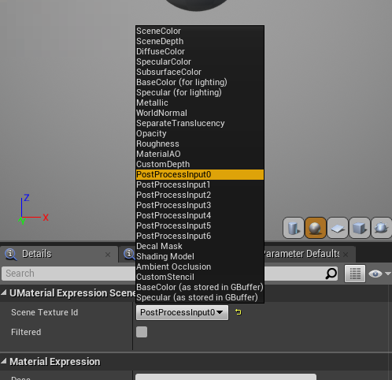
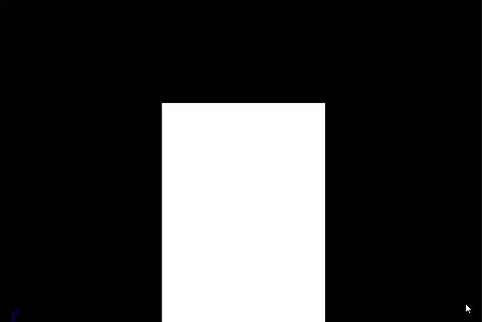
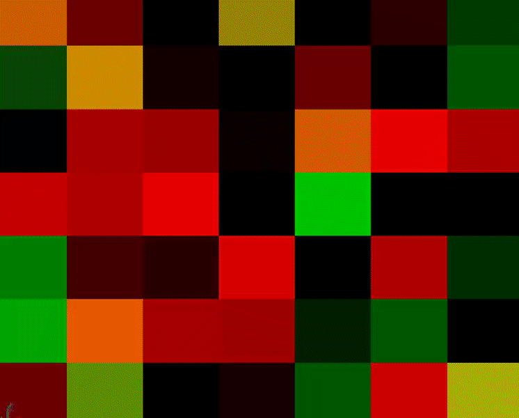
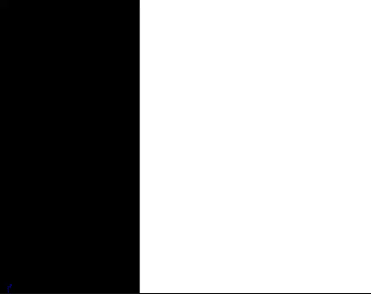
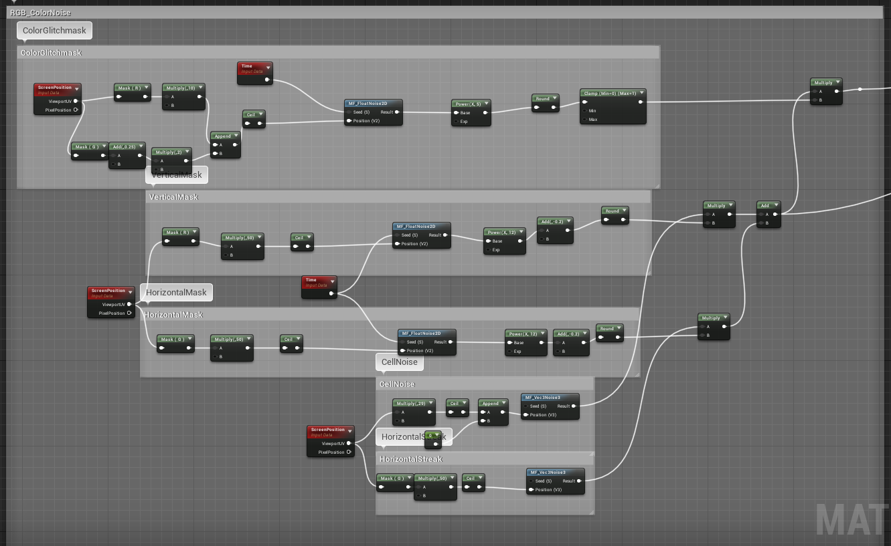
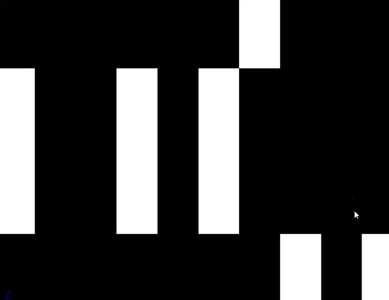
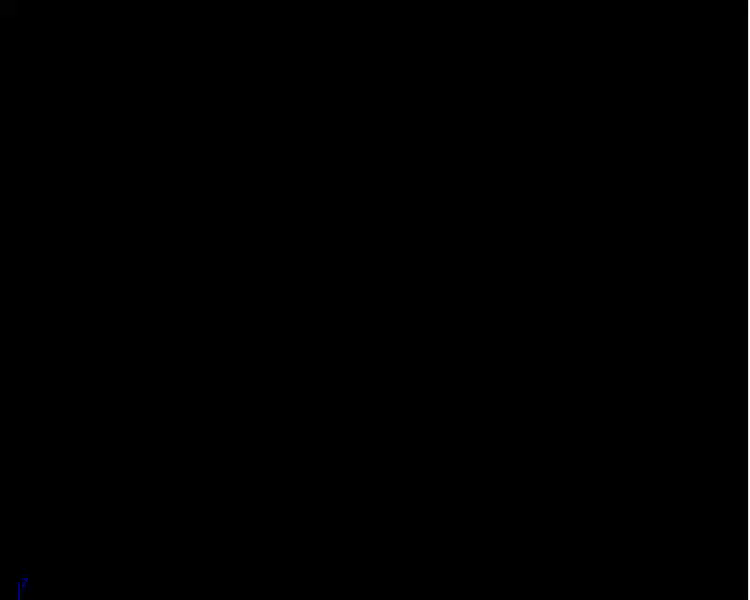
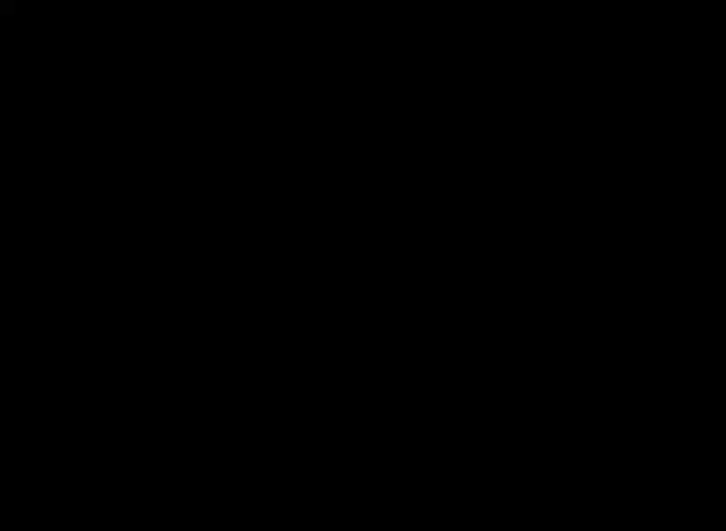
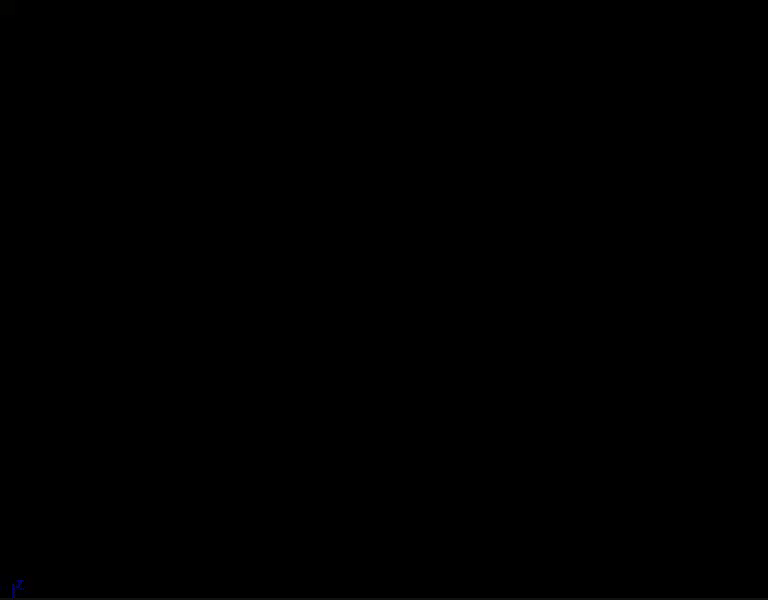
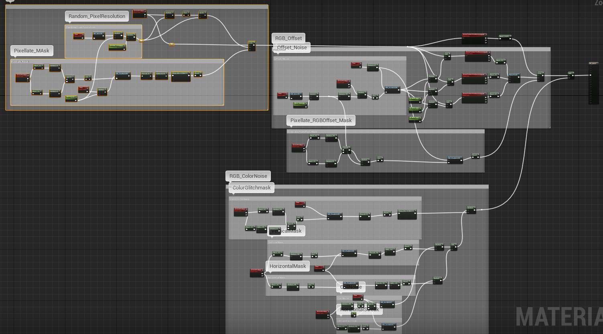

Post Process Glitch
源地址：https://deepspacebanana.github.io/deepspacebanana.github.io/

This Post-Process effect came about after I saw this Tweet from Klemen Lozar, it was neat little glitch effect, So I decided to take it a little further and try and make a Post0Process Glitch shader.
Note: You can open the images in a new tab to view them at a higher resolution
Introduction
The Entire Shader is created procedurally and makes use of some of my Custom Noise Functions that I feature in my previous Glitch Effects breakdown, so be sure to read through that before following along with this one.
The effect basically has three layers
Pixellation

RGB Offset

Color noise (Vertical/Horizontal)

Pixellation
This is a pretty common effect, it’s basically a UV trick where we multiple the UV’s with a resolution amount, round the values down so that each cell determined by resolution value only samples a single pixel to create the pixellated look, the lower the “Resolution” the more low-res it looks. We add one extra step to this we multiple the Resolution value by a psuedorandom scalar value, so that the resolution value varies over time to feel more glitch like. We also create a Psuedorandom cell mask to mask out the glitch so that it only appears at certain times on certain parts of the screen.

Make sure the Scene Texture Node is set to use PostProcessInput0

If you wire the result from the Node Marked 1 directly into the Scene Textuer node you can see what the fully pixellated result looks like.

The Pixellate Mask section basically uses the 2D Noise Function to create an Animated Black and White cell Mask in ScreenSpace that then Interpolates between regular Screen UV’s and the Pixellated Screen UV’s. If you plug the result from Round Node Marked 3 directly into the emissive, You ucan see what the mask looks like

Note that you can control the tiling of the mask by multiplying a scalar value with the U and V of the screen Coordinates, in this case I jsut left a default value of 3 for both, but you can create a parameter to control that as well.
We then use it to Interpolate between the Regular Screen UV’s and the Pixellated Screen Uv’s and feed that to the SceneTexture UV Input, for the Final Result:

RGB Offset
The RGB offset is basically the same as what Klemen does in his shader, but instead of using a texture we use a psuedorandom cell noise function to drive the offset.

The network of nodes under the section Offset Noise basically uses the Screen UV’s as input for the MF_Vec2Noise2D Function to generate some animated psuedorandom screenspace 2D CellNoise, we use this noise to offset the pixels of the screen, you can preview what this noise looks like by plugging in the result from MF_Vec2Noise2D into the emissive output:

We take the result from the Noise Function and then multiple it by 3 different values for the Red , Green and Blue Channles respectively, we then add each of these to the Result from the Pixellated Screen UVs to get three different Uv results that will drive the Red,Green and Blue Channel of the Screen Buffer. If you preview the result from the MakeFlaot3 you’ll see this.

The section under Pixellate Offset Mask is basically the same thing that we did in the previous section, we are using the Noise function to generate a black an white cell mask which we will use to Interpolate between the Pixel Effect and the Offset Effect

The last thing to do in this section is to just interpolate between the Pixellated Scene Texture Result and the Offset Scene Texture result using the PixelOffset Mask

RGB Color Noise
This last section deals with adding some horizontal and vertical color streaks to try and mimic the glitchy effects you would see in old cable TV’s when the signal was messy. Here too we make use of our handy Custom Noise Functions

The ColorGlitchMask section does the same thing as teh previous two sections it creates a black and white cell mask, that we will use later to mask out the areas where the RGB Color Streaks show.

The two sections at the bottom CellNoise and HorizontalStreak use the MF_Vec3Noise3 function to generate some screen space color(Vector3) noise as shown below respectively


The VerticalMsk and Horizaontal Mask sections are very similar to the previous mask we have created, in that they generate animated screen space Masks, in this case we isolate the V and U respectively to get Vertical Lines and Horizontal Lines as shown below


We then multiple the VerticleLine Mask with the result from cellnoise, and the result from the HorizontalLine Mask with the result from the horizontal Streak section and add both together before multiplying it with the overall GlitchColorMask which gives us the Final Result for the color Streaking

The Last thing to do is take the result from the RGB Color Noise Section and Add it to the result from the last two sections to give us the Final Result, You can see the Entire Network Below

And the Final Result

关于本文
本文作者 Master Gong Sheng, 许可由 CC BY-NC 4.0.